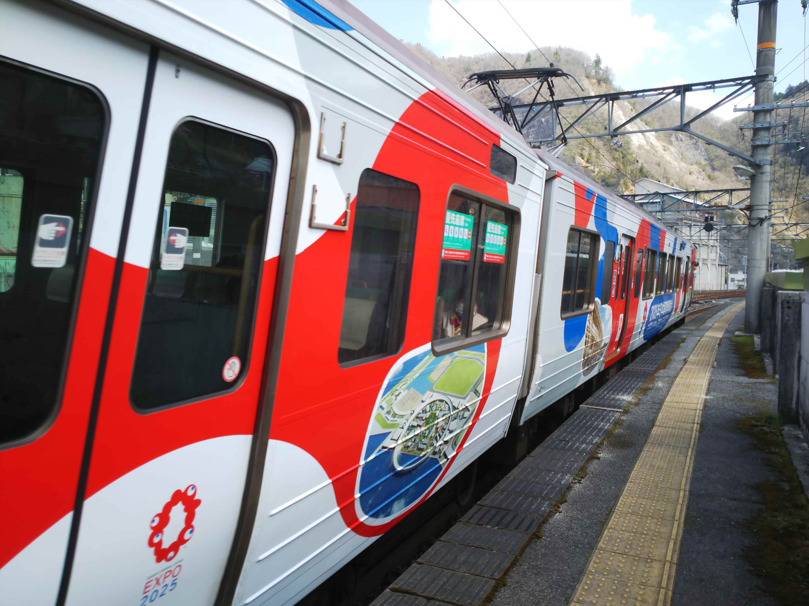
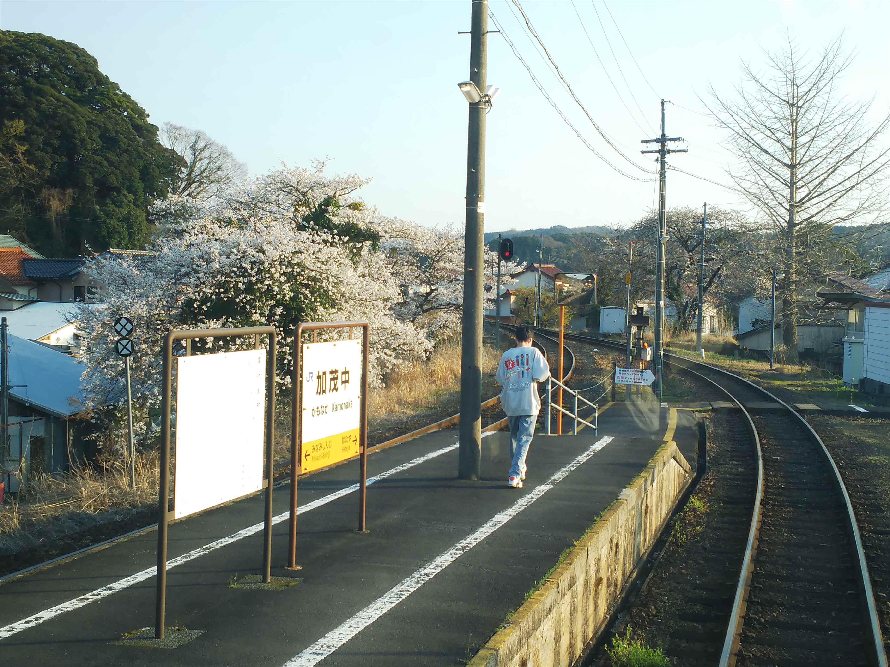
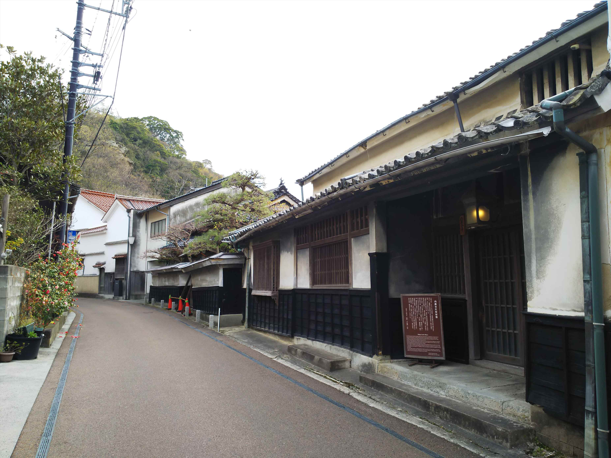
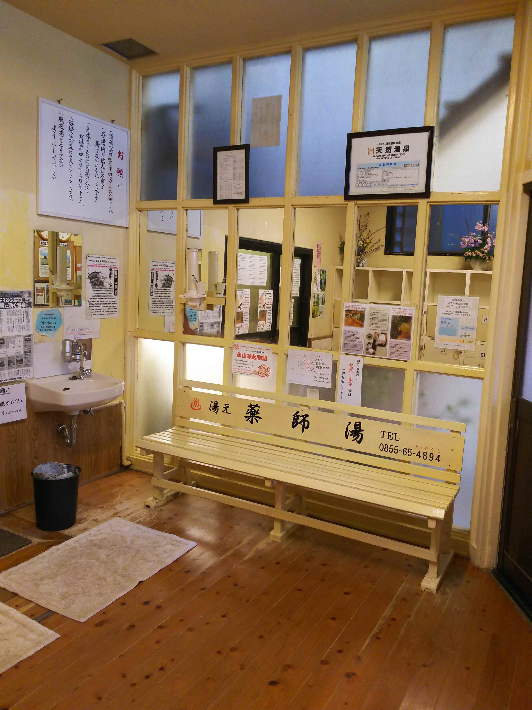

2025（R7） 4月4～5日 山陰温泉めぐり
新生となった青春１８切符、最初のシーズンは見送りましたが、今回の春シーズンでとうとう手を出してしまいました。
３日連続をどう使うか・・・

朝の兵庫駅。
おいおい、西向きもうれシートっちゅう全くうれし
くないことやっとんのかいな。
で、予想に反して満員で、加古川過ぎるまで座れま
せんでした。

朝の姫路では、珍し行先の列車が存在してます。新
見まで直通！
車両は岡山色の車両でした。なかなかいいカラーリ
ングっすね。
座れたし、乗り換えなくてらくちんです。
ちなみにこんな切符になってしまいました。
自動改札通れるのが唯一の改善点っすね。思考停止
の連中に邪魔されずに済む・・・
山間にある井倉駅に到着。
駅の真横では石灰石を掘り出してますね。鉄道貨物
使ったれよ・・・

なぜここで降りたかというと・・・

じゃ～ん！井倉洞という鍾乳洞がお目当てです。

途中にはＤ５１の保存機もありました。
この橋を渡った対岸の崖の中にあるようです。
この鍾乳洞、いままで行ったどの鍾乳洞より狭いで
す。


迫力はないんですが、穴の中を通ってる感はありますね。
カルシウム分が濃いのか、鉄板の階段も鍾乳石化していました。

昔は賑わっていただろう周辺の売店。
一部は営業してて、昼食べれて助かりました。

さて、先に進みます。
なんと、伯備線にも万博ラッピング列車が動いてま
した！

新見で存続の危機にある芸備線の末端区間に久々に
乗車します。
新見を発車する前に、駅員らしき人が「木次線に乗
り換える方は手を挙げて下さい」って聞いてくるの
で、なんでかと思ったら・・・
木次線、肝心のスイッチバック区間が大雪の影響で
今日まっで不通て！！
おいおい！なめとるんか。

まぁ今回の目玉でもなかったし、数年前にも乗って
るので、それほど落胆もなく・・・。
車窓はのどかですが単調です。
もしかして、これで乗り収めかも・・・
備後落合駅に到着。
この時間、３方向の列車が集結して、つかの間の賑
わいになります
木次線が不通なんで、２方向か・・。
ほとんどが「鉄」ですが。

徳永君もいろいろやっとるなぁ。本業頑張りや。

これが代行バスですね。だから乗換人数聞いてたん
かいな。
混んでるかと思ったら、定員以下で代行バスは出発。
出雲坂根駅で長めに停車してくれます。
これが名物の延命水か。もちろん飲みました。寿命は伸びたん
やろか。
代行バスの終点、出雲横田に到着。

やっぱ鉄道のほうがいいですね。


沿線は桜が多く、車窓からの花見が出来て良かった
です。
こんだけ桜多いなら、花見列車とかやればええのに
と思います。この路線は観光路線としてでもなんと
か継続してほしいものです。

宍道駅で山陰本線に乗り換えます。
ここでも新見行が！これも珍しいはずです。
玉造温泉駅に到着。日暮れ時ともなるとさすがに寒
いっす。
バスが全然来ず、キレそうになりました。
一緒にバスを待ってるのは個人のインバウンドさん。
最近、都市部以外でも見かけるようになりましたね。
勝手に、もっとチャラめの温泉街と思ってましたが、
川を挟んだなかなかええ雰囲気ですね。桜が咲いて
るっちゅうのもあるんかな。
全然うまく撮れてないですが、この後ろ側に近代的な建物の外来温泉施設が
あるんです。
見た目に反していいお湯でした。
源泉は６８°Ｃもあるようです。
帰りは駅まで歩いて戻りました。
出雲市行の電車が遅れてて、乗り継ぎがやばかった
ですが、走ってなんとか間に合ったのでキレること
がなくて良かったっす。
乗り継いで、西出雲駅に到着。いつのまにか、知井
宮という駅名から変わってたんすね。
近くに車庫があるので、こまで電化されてて、昔は
一部のやくもがここまで走ってましたね。
今日はここまで。
翌朝。なんか無機質な駅ですね。
山陰本線の西部はこの車両なんや。
ホームの行先方面表示、東は京都ではなく大阪にな
ってる。京都やないんやな。
西へ西へと進み、温泉津までやって来ました。
なんどか通りましたが、下車したのはかなり久しぶ
りっす。
文字通り、温泉街まで歩いて行けます。

駅近くにええ感じの共同浴場がありますが、残念な
がら夕方以降しかやってませんでした。

１５分ほど歩くと温泉登場です。
外湯が２か所あって、こっちは入らなかったほうで
す。
昔来たとき、どっちに入ったのか・・・こっちやっ
たような・・・
今回は、温泉津で一番有名な温泉に入ることにしま
す。
薬師湯です。

有馬に似た、黄色っぽいお湯でした。
建物の屋上に出れて、町並みが見れます。無料コー
ヒーサービスもあって、なかなか良いです。

この半円状に出っ張ったところも、休憩スペースで 外を見ながら休めます。 帰りはコミュニティバスに乗って駅まで戻りました。
さて、これで今日のイベントは終了～。
黙々と、鈍行を乗り継いで戻ります。
昔は大阪まで鈍行で乗り換えなしで行けたっちゅう
のに・・・
車窓から見える海が綺麗です。
出雲市で米子行きに乗換。この車両、見た目はダサダサですが、中はボック
スシートでいいんですわ。
米子からは国鉄型。大山もよく見えます。
車窓からのほうが大山が綺麗に見えました。
鳥取で改めて国鉄型に乗り換えて、浜坂駅で小休止。
豊岡からは、復刻の福知山線色の電車にあたりました。
和田山で播但線に乗換え。
かわった車両っすね。
観光用の車両のようです。やっぱり持ってますわ。
寺前で乗り換え。まだまだ１０３が元気です。
夜は寒いのに、全然暖房入れよれへん。苦情言うの
は我慢したりました。
しかし、疲れました・・・。